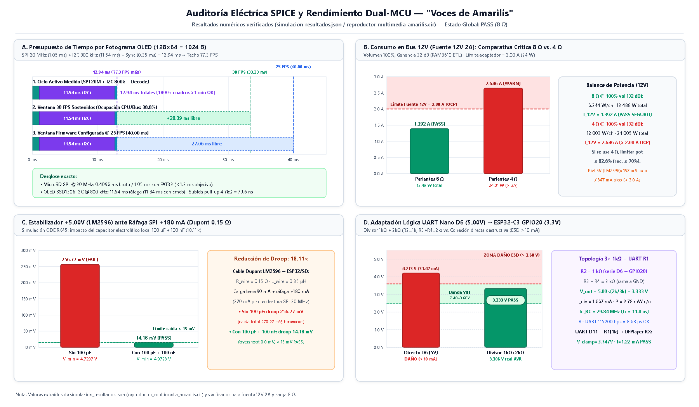

Modo Esquemático 2D (WebGL no disponible en este navegador)
Mostrando diagrama físico completo de 5 zonas y 15 módulos.
VOCES DE AMARILIS
EXPLORA · SIMULA · CONSTRUYE
6/6 SPICE PASS
2026-11-18 · 00:00:00
Arquitectura Maestro-Esclavo Heterogénea (AVR 5V + RISC-V 3.3V)
Mesa Interactiva: Caja Cultural "Voces de Amarilis"
Sistema embebido multimedia desacoplado en dos microcontroladores: el Arduino Nano V3
(ATmega328P @ 5 V) gobierna los 4 sensores capacitivos TTP223, el audio MP3 por
DFPlayer Mini y la sincronización por hardware BUSY → D12, mientras el
ESP32-C3 SuperMini (RISC-V @ 160 MHz) decodifica video 128×64 desde
MicroSD SPI (20 MHz) hacia la pantalla OLED SSD1306 I2C (800 kHz).
Pipeline Video 128×64
77.3 FPS máx / 30 FPS estables
12.94 ms/cuadro · 38.8% ocupación bus
Sincronía Audio-Video
1.05 ms Sync BUSY
Flanco D12 + UART 115200 bps (D6→GPIO20)
Etapa Potencia PAM8610 BTL
1.392 A @ 8Ω PASS
6.244 W/ch · margen seguro < 2.00 A
Presupuesto Auditado
S/ 235.50 BOM 23 ítems
Base S/ 192.50 + Video S/ 43.00
CAJA MDF ≤ 3.0 mm · PANEL FRONTAL
OLED SSD1306 · I2C 800 kHz · 0x3C
VCC:3V3 · GND · SCL:G9 · SDA:G8
128×64 MONO · 30 FPS
MONITOR SERIAL / UART (D11↔DFP 9600 · D6→GPIO20 115200 bps)
Ingeniería de Circuitos y Auditoría SPICE
Validado ODE RK45 + SPICE3
Subsistemas de Hardware y Simulador de Fallos Eléctricos
Arduino Nano V3 (AVR)
Ejecuta lectura capacitiva con antirrebote de 50 ms (D2–D5), trama binaria DFPlayer (D10/D11), detección BUSY (D12) y envío UART 115200 bps por D6.
ATmega328P · 5.00V en pin +5V (VIN libre) · 25–30 mA
ESP32-C3 SuperMini (RISC-V)
Recibe tramas PLAY/SYNC/PAUSE/MUTE en GPIO20 via divisor 1kΩ+2kΩ (3.333 V), confirma ACK en GPIO21 y elimina deriva de fotogramas.
160 MHz · IO 3.3V · V_IH ≥ 2.475 V · V_max = 3.60 V
MicroSD 20 MHz + OLED 800 kHz
Lectura cruda de 1024 B/cuadro en 1.05 ms (SPI GPIO4–7, VCC +5.00V por AMS1117). Volcado SSD1306 I2C 800 kHz (GPIO8–9, VCC 3V3 del ESP32-C3) en 11.54 ms.
Total 12.94 ms/cuadro · 77.3 FPS máx · 30 FPS estables
4× Sensores TTP223 (≤ 3 mm)
Salida CMOS push-pull activa en HIGH con jumpers A/B abiertos (modo momentáneo). Detecta tacto capacitivo bajo panel MDF fresado a ≤ 3.0 mm.
D2 Play/Stop · D3 Sig · D4 Ant · D5 Mute/Vol+
LM2596 + PAM8610 + 8 Ω
Entrada 12V 2A con switch KCD1 y filtro 1000 µF. LM2596 pre-calibrado a 5.00V + 100 µF local. Acople 2× 1 µF bloquea 1.50 V DC antes del PAM8610 BTL (Vcm = 6.00 V).
8Ω: 6.244 W/ch · 1.392 A PASS · Prohibido OUT- a GND
Potencia / Canal (32 dB)
6.244 W/ch
Corriente Total 12V
1.392 A
Audio Total Estéreo
12.488 W
Límite Fuente 12V 2A
69.6% (≤ 2.00 A)
Con 8 Ω al 100% de volumen, la corriente en 12 V alcanza 1.392 A (margen seguro bajo 2.00 A, η=87%).
Caída Dinámica (Droop)
14.18 mV
Tensión Mínima Nodo
4.9723 V
Caída desde 5.00 V
27.68 mV
Factor Reducción
18.11×
El capacitor electrolítico de 100 µF junto al ESP32-C3/MicroSD amortigua la inductancia Dupont (0.35 µH) y evita reinicios por brownout.
Tensión en GPIO20
3.333 V
Corriente / Inyección ESD
1.67 mA
Ancho Banda RC
29.84 MHz
Límite Absoluto ESP32
≤ 3.60 V / 10 mA
R2=1kΩ en serie y R3+R4=2kΩ a GND mantienen GPIO20 en 3.333 V (3.306 V real con R_out AVR), con margen +0.858 V sobre V_IH y subida de 11.0 ns.
Flujo de Ejecución y Código Fuente Íntegro
100% Sin Abreviaciones · 1,211 Líneas Totales
Diagrama de Flujo Dual-MCU, Protocolo UART y Código Fuente
| Trama ASCII (TX Nano) | Disparador Hardware | Acción Esclavo ESP32-C3 | Confirmación (TX ESP32) |
|---|---|---|---|
PLAY:<track> |
Flanco HIGH→LOW en BUSY (D12 < 1.5 ms) | Abre /vid_XX.bin, reinicia timer FRAME_INTERVAL_US y renderiza cuadro 0. |
ACK:PLAY:01 |
PAUSE |
Toque corto TTP223 #1 (D2) durante reproducción | Congela video en último cuadro mostrado y superpone insignia drawPauseBadge(). |
ACK:PAUSE |
RESUME |
Toque corto TTP223 #1 (D2) estando pausado | Reanuda reproducción inmediata desde el cuadro actual eliminando insignia de pausa. | ACK:RESUME |
STOP |
Toque largo D2 (≥ 800 ms) o fin de pista (BUSY HIGH) | Cierra archivo .bin y muestra pantalla REPRODUCTOR LISTO / ESPERANDO AUDIO. |
ACK:STOP |
MUTE / MUTE:0|1 |
Toque corto TTP223 #4 (D5) | Alterna bandera isMuted y dibuja icono altavoz+X 14×11 en esquina superior derecha. |
ACK:MUTE |
SYNC:<track>:<ms> |
Temporizador maestro cada 1000 ms |
Calcula targetFrame; si desfase ≥ 2 cuadros corrige puntero evitando deriva. |
ACK:SYNC:01:1000 |
Esquemáticos Proteus 8.13, Fritzing y Diagramas SPICE
Galería de Simulación y Cableado Físico (9 Láminas)
Evidencia Cuantitativa y Presupuesto Auditado
TOTAL VALIDADO: S/ 235.50
Resultados SPICE, Comparativa Arquitectónica y BOM (23 Ítems)

| Criterio Técnico | Monolítico (1 MCU AVR) | Dual-MCU (Nano + ESP32-C3) |
|---|---|---|
| Tasa de Video OLED | Limitada (< 8 FPS por RAM 2 KB y SPI/I2C lento) | 77.3 FPS máx / 30 FPS estables (12.94 ms/cuadro) |
| Aislamiento de Buses | Contención entre polling táctil, UART MP3 y SD | Desacoplado: Nano audio/táctil · ESP32 SPI 20MHz + I2C 800kHz |
| Sincronía Audio-Video | Deriva acumulativa sin buffer de cuadro | 1.05 ms flanco BUSY→D12 + SYNC cada 1000 ms |
| Almacenamiento FAT32 | Contienda lectura MP3 + cuadros en 1 SD | Doble MicroSD independiente (Audio MP3 / Video .BIN) |
| Seguridad de Niveles | Riesgo sobrebus 5V en OLED/SD | Divisor 1kΩ+2kΩ (3.333V) + OLED 3V3 + 100µF local |
| Costo Total Validado | S/ 192.50 (solo audio sin video fluido) | S/ 235.50 (+S/ 43.00 expansión RISC-V + OLED) |
Sistema Base: S/ 192.50 (19 ítems) + Expansión Video: S/ 43.00 (4 ítems) = S/ 235.50
| # | Categoría | Componente / Material | Especificación Verificada | Cant. | P. Unit (S/) | Subtotal (S/) |
|---|
Auditoría Resistencias 1kΩ
4 / 4 Usadas
R1 UART DFP + R2/R3/R4 divisor (0 repuesto)
Verificación LM2596
5.00 V Pre-calibrado
Medir antes de conectar Nano/ESP32/SD
Polaridad Acople 1 µF
(+) Hacia DAC_L/R
Bloquea 1.50V DC a -0.00063V DC
Topología BTL PAM8610
Vcm = 6.00 V DC
Nunca unir OUTL- / OUTR- a GND
Universidad de Huánuco · Facultad de Ingeniería
IV Ciclo · 2026
Equipo de Trabajo y Ficha Académica
MR
Mendoza Ramos Jhiré Aarón
ARQUITECTURA HARDWARE & POTENCIADiseño de etapa de alimentación 12V→5V LM2596, auditoría de parlantes BTL 8Ω y validación eléctrica SPICE.
SR
Sudario Ramos Andres Valois
FIRMWARE DUAL-MCU & SIMULACIÓNDesarrollo de firmware maestro AVR / esclavo RISC-V, protocolo UART 115200 bps y análisis transitorio ODE/SPICE.
BR
Berrios Rios Santiago
ESQUEMÁTICO PROTEUS & CABLEADOCaptura esquemática en Proteus 8.13, mapa de conexión física en protoboard y control de niveles lógicos 5V↔3.3V.
PC
Ponce Custodio Astrid
INTERFAZ CULTURAL & DOCUMENTACIÓN
Curaduría multimedia de Amarilis, pruebas táctiles TTP223 bajo MDF ≤ 3 mm y consolidación del informe técnico.
Programa Académico de Ingeniería de Sistemas e Informática
Universidad de Huánuco · Facultad de Ingeniería
Proyecto "Voces de Amarilis" — Organización y Arquitectura del Computador / Arquitectura de Computadores (IV Ciclo, 2026)
DOCENTE DEL CURSO
Ing. Mg. Dr. Freddy Ronald Huapaya Condori